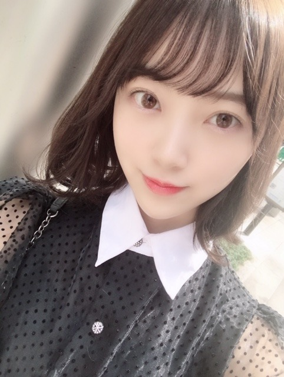

2019/0323Satクロスなネックレス

髪色、オリーブカラーにしてみました。どうかな？
すっかり春ですね
アメトーーク!3時間sp絵心ない芸人
見てくださった方ありがとうございましたm(__)m
想像以上に、絵心が無いといわれ驚きでした！
でもこれからも自分の画風とインスピレーションを大切にいろんな絵を描いていきたいと思います☺︎
久しぶりに美術館にも行きたいなぁ
すっかり春ですね
アメトーーク!3時間sp絵心ない芸人
見てくださった方ありがとうございましたm(__)m
想像以上に、絵心が無いといわれ驚きでした！
でもこれからも自分の画風とインスピレーションを大切にいろんな絵を描いていきたいと思います☺︎
久しぶりに美術館にも行きたいなぁ

みなさん優しくて本当に楽しい時間でした✨
今日3/23(土)23:00～24:30 NHK総合
「#坂道テレビ ～乃木と欅と日向～」
齊藤京子ちゃんと小林由依ちゃんと料理をしたりお話しをしました✨人見知りあまり出てないといいな。笑
3/30(土)18:30〜20:54 テレビ東京
「はじめて東京行ってみたら？」
日奈子と2人でゲストとして出させていただきました！涙あり笑いありで見応えたっぷりです！
発売中「ar」「B.L.T.5月号」
よろしくお願いします^-^


あやねちん だいすき♡
私、、、白玉みたい。笑
でははは
2019/03/23 20:48
コメント(435)
堀ちゃん！今日もブログの更新ありがとうございます！
髪色も髪型も似合ってると思います！
可愛いです
明日のスペシャルイベントに行かせていただきます！
まだ生で会ったことがないので、とても緊張しますが、少しでもお話できたら良いと思っています。とても楽しみにしています！
よろしくお願いします！
髪色も髪型も似合ってると思います！
可愛いです
明日のスペシャルイベントに行かせていただきます！
まだ生で会ったことがないので、とても緊張しますが、少しでもお話できたら良いと思っています。とても楽しみにしています！
よろしくお願いします！
ブログ更新ありがとうございます！
映画楽しみにしています。
これからも頑張ってください応援しています‼︎
映画楽しみにしています。
これからも頑張ってください応援しています‼︎
ブログありがとう！
この前の全握弟が行ったみたいです！
ホットギミックの予告見て、めっちゃ見たくなった
アルバム個握名古屋行きます！


この前の全握弟が行ったみたいです！
ホットギミックの予告見て、めっちゃ見たくなった
アルバム個握名古屋行きます！
更新ありがとう❗
めっちゃかわいい
めっちゃかわいい
未央奈～こんばんは！
ぽてとです！
絢音ちゃんとの2ショットで
目が覚めた♪ヽ(´▽｀)/
最高！
ぽてとです！
絢音ちゃんとの2ショットで
目が覚めた♪ヽ(´▽｀)/
最高！
告知ありがたいけど30日の番組は放送局の都合で観れなさそう。
未央奈～ブログ更新ありがとう！
アメトーーク録画したから見るね
ホットギミック楽しみ！
アメトーーク録画したから見るね
ホットギミック楽しみ！
ブログ更新＆告知ありがとうございます！おかげさまで坂道テレビ間に合いました！
うっかり長湯してて5分前にブログに気づいてすぐお風呂あがりました
未央奈さんの耳が赤かったのは緊張のため？？
好きなタイプの話聞けたり白菜切ってるところ見れたり、自分には新鮮でした✨後半も楽しみです。
引き続き見ます〜〜〜
うっかり長湯してて5分前にブログに気づいてすぐお風呂あがりました
未央奈さんの耳が赤かったのは緊張のため？？
好きなタイプの話聞けたり白菜切ってるところ見れたり、自分には新鮮でした✨後半も楽しみです。
引き続き見ます〜〜〜
今観てるよ〜〜 坂道テレビ〜〜
人見知りかんは出てないよ〜〜
体調に気をつけて頑張ろう〜〜
人見知りかんは出てないよ〜〜
体調に気をつけて頑張ろう〜〜
未央奈ブログ更新ありがとう
オリーブカラーにしたんだね。自分も緑系いれてたから一緒だね。
オリーブカラーにしたんだね。自分も緑系いれてたから一緒だね。
ブログ更新ありがとう！
いつもほんとブログ書いてくれて嬉しいよー！
握手会では兄の話で僕が弟ですって話したけど覚えてるかな？
アメトークぶっ飛んでたねw
マジでおもろかったw
髪の色メチャクチャ似合ってる。かわいいでーす。
ブログ更新ありがとう
未央奈かわいすぎ
アメトーク面白かったー
未央奈かわいすぎ
アメトーク面白かったー
坂道テレビ見たよー。
堀ちゃん料理作ってたけどこないだの乃木中でヒムラさんにまずすぎる料理でふられたせいか変なイメージついたのかな?
絶対美味しい料理作るって信じてるよ。
堀ちゃん料理作ってたけどこないだの乃木中でヒムラさんにまずすぎる料理でふられたせいか変なイメージついたのかな?
絶対美味しい料理作るって信じてるよ。
本当だみおな白玉みたいだ笑
なんか可愛すぎてどうでもよくなった！
今度元気玉打ってください
なんか可愛すぎてどうでもよくなった！
今度元気玉打ってください
未央奈ちゃん今日もおつかれさまです♡
ホットギミックの予告すごく素敵で公開ますます楽しみになりました！！はやくおっきいスクリーンで見たいです〜！
この前のブログでも着てたそのトップス、ZARAのものですよね！？私もこの前買ってたまたまお揃いでびっくりしました！
明日もがんばりましょうね！
ホットギミックの予告すごく素敵で公開ますます楽しみになりました！！はやくおっきいスクリーンで見たいです〜！
この前のブログでも着てたそのトップス、ZARAのものですよね！？私もこの前買ってたまたまお揃いでびっくりしました！
明日もがんばりましょうね！
ブログ更新ありがとうございます！髪似合ってますね。アメトーーク!おもしろかったです。
未央ちゃんブログ更新ありがとう(*^^*)
髪色オリーブカラー似合ってて可愛い
坂道テレビ見たよ(o^^o)
お鍋美味しそう(o^^o)
未央ちゃんさすが料理上手だね(o^^o)
坂道テレビよかったよ(^_^)
未央ちゃんお休み
斉藤貴巳
髪色オリーブカラー似合ってて可愛い
坂道テレビ見たよ(o^^o)
お鍋美味しそう(o^^o)
未央ちゃんさすが料理上手だね(o^^o)
坂道テレビよかったよ(^_^)
未央ちゃんお休み
斉藤貴巳
未央奈さん！今日も１日お疲れ様〜でした 坂道TV!面白かったです！ 欅さんや日向坂さんとのコラボ企画 楽しかったです！ 今夜は、未央奈さんのお陰でよく眠れそうです！ ありがとうございましたm(_ _)m じゃあ、未央奈さん！おやすみおな❤️❤️❤️❤️❤️ お疲れ様〜でした 未央奈さん！風邪引かないでね❤️ ( ´ ▽ ` )ﾉ
坂道テレビ見たよ
未央奈ちゃんて料理出来るんだね びっくり‼️
堀北コンビ最高
絶対見るね！
未央奈ちゃんて料理出来るんだね びっくり‼️
堀北コンビ最高
絶対見るね！
アメトーク観ました、たくさん笑って面白かったです、堀ちゃんの絵は人を幸せにしますね。
坂道テレビは録画してますが、まだ観てません、三グループがクロスオーバーするのって良いですね、普段中々ないから。
坂道テレビは録画してますが、まだ観てません、三グループがクロスオーバーするのって良いですね、普段中々ないから。
アメトーーク! 、相変わらずやってましたね（笑）
坂道テレビは、まさかのほぼ初対面の３人でビックリ！
絢音ちゃんはザンビで演技なのに泣いてたから、仲良しなんだなっていうのが感じられた
坂道テレビは、まさかのほぼ初対面の３人でビックリ！
絢音ちゃんはザンビで演技なのに泣いてたから、仲良しなんだなっていうのが感じられた
みおなちゃん
馴染みの居酒屋で、絵心ない姿を見ていたよ(笑)
でも、それがみおなちゃん！
居酒屋のマスターも、僕がみおなちゃんみおなちゃんと連呼する姿に驚いていました(^-^)
普段はクールやからね(笑)
やっぱテレビで乃木メン見たら安心する(笑)
馴染みの居酒屋で、絵心ない姿を見ていたよ(笑)
でも、それがみおなちゃん！
居酒屋のマスターも、僕がみおなちゃんみおなちゃんと連呼する姿に驚いていました(^-^)
普段はクールやからね(笑)
やっぱテレビで乃木メン見たら安心する(笑)
未央奈ブログ更新ありがとう☆
坂道TV見たよ！
未央奈の乃木坂に対する想いが
しっかり伝わったよ！
1期生が作ったものを引き続き未央奈はじめ
2期3期4期生が新しい乃木坂を作っていくことを
楽しみにしています！
坂道TV見たよ！
未央奈の乃木坂に対する想いが
しっかり伝わったよ！
1期生が作ったものを引き続き未央奈はじめ
2期3期4期生が新しい乃木坂を作っていくことを
楽しみにしています！
更新ありがとう！
映画楽しみ！！
映画楽しみ！！
可愛さ今季最高仕上がり！！！！！！！！！！！！！！！！！！！

坂
道
テ
レ
ビ
観
た
よ
！
！
！
！
↓
 （
（ ） もう
） もう

 特集そのものや！！！！！！！！！！！！
特集そのものや！！！！！！！！！！！！
坂
道
テ
レ
ビ
観
た
よ
！
！
！
！
↓
未央奈、可愛すぎ！！
アメトークも、
可愛いくて、
面白かったよ。
坂道テレビは、
録画して、
今から楽しく見ます。
残念ながら、
もうひとつは、
大阪では放映されません…
くじけませんよ。
アメトークも、
可愛いくて、
面白かったよ。
坂道テレビは、
録画して、
今から楽しく見ます。
残念ながら、
もうひとつは、
大阪では放映されません…
くじけませんよ。
こんばんは。ブログ更新ありがとうございます。
アメトーーク見ました！！絵心が無いって言われちゃったけど、絵を描くのが好きな人には、気にせず自由に描いて欲しいと思います。正確に描くのが良いというわけではないと思います。そういう人には写真撮影をお勧めします。上手いと言われなくても、絵心が無いと言われても、描かれた絵から個性が表れるところが良いのです。
坂道テレビは録画しました。これから見ます。「はじめて東京行ってみたら？」も予約せねば。
ではまた。
アメトーーク見ました！！絵心が無いって言われちゃったけど、絵を描くのが好きな人には、気にせず自由に描いて欲しいと思います。正確に描くのが良いというわけではないと思います。そういう人には写真撮影をお勧めします。上手いと言われなくても、絵心が無いと言われても、描かれた絵から個性が表れるところが良いのです。
坂道テレビは録画しました。これから見ます。「はじめて東京行ってみたら？」も予約せねば。
ではまた。
オリーブカラーの髪色、とっても似合ってると思うよぉ♪♪ 堀ちゃんならきっとどんな髪色でもオシャレで可愛く見えると思う!!(*´-`) アメトーク!!←堀ちゃんの絵。は確かに、どれも斬新だった(゜ロ゜)笑 そういう堀ちゃんの持つ独特の世界観も魅力の1つ♪♪ あやねちんと堀ちゃんが並ぶと...。超絶可愛すぎるコンビに!!(〃▽〃)
堀ちゃんブログ更新ありがとう！
絵心ない芸人見ました！もうホントに堀さん最高だった、下手というより観点が独特だよね堀さんは。笑
描くところはすごい細かく描くけど要らない部分は徹底的に省く。もっと堀さんの絵が見れたらいいなぁ来年も出れたらいいな！
坂道テレビは明日見るよ〜きょう見れなくてごめんね…
自転車漕ぎすぎてつかれた…堀さんって自転車漕ぐ機会とかある？
そしてすずほりの供給ほんとうにありがとうございます…！！！
もうすずほりコンビが大好きすぎて、ずっとずっと仲良しでいてね！心配はしていませんけど笑
またすずほりエピソード聞かせてほしいなぁ
また書くね！遅くなってしまった…
絵心ない芸人見ました！もうホントに堀さん最高だった、下手というより観点が独特だよね堀さんは。笑
描くところはすごい細かく描くけど要らない部分は徹底的に省く。もっと堀さんの絵が見れたらいいなぁ来年も出れたらいいな！
坂道テレビは明日見るよ〜きょう見れなくてごめんね…
自転車漕ぎすぎてつかれた…堀さんって自転車漕ぐ機会とかある？
そしてすずほりの供給ほんとうにありがとうございます…！！！
もうすずほりコンビが大好きすぎて、ずっとずっと仲良しでいてね！心配はしていませんけど笑
またすずほりエピソード聞かせてほしいなぁ
また書くね！遅くなってしまった…
未央奈♫
ブログ更新ありがとう^_^
アメトーク、最高やったよ。
もうね、スタジオにいた芸人さんたちに引けを取らない笑いの強さが出てたよねw
ホットギミック
映画、公開されたらすぐに観に行くよ〜〜
今から楽しみ！
レコメン
もう毎週水曜のレコメンは、俺の活力源です。聞かないと木曜日がんばれませんw
アルバム個握
全く券が当たりませんでした…
人気沸騰です…
日奈子とのロケ
テレ東京で月末にあるやつ、めっちゃ楽しみ！
PS 応援してるで！！
堀カワエエ！！
堀ちゃん
今日もお疲れ様です
オリーブカラーで光に当たってると透け感が出てすごくキレイな色ですね
とても似合ってます
前回も話しましたが、アメトークは面白かったです（今度は鏡に映る自分を描いてみては？）
坂道テレビもさっき観てました
しっかり野菜切ってて、お姉さんな感じ出てました
そんなに人見知りな感じは出てませんでしたよ
俺も人見知りだから、どこか外で知ってる人を見かけても、バレないように逃げるか知らないフリをしがちです
だけど話せば普通に話すし、決してその人の事が嫌いな訳ではないんだよね笑（分かりますかね？）
仲間がまた一人と卒業する中、堀ちゃんもどちらかと言うと先輩という立場になってきたと思うし、これからの乃木坂を引っ張っていく、なくてはならない存在だと思うので、頑張って下さい（でも疲れたり追い込まれた時は休んでね）
明日も頑張って下さい
ありがとうございました
今日もお疲れ様です
オリーブカラーで光に当たってると透け感が出てすごくキレイな色ですね
とても似合ってます
前回も話しましたが、アメトークは面白かったです（今度は鏡に映る自分を描いてみては？）
坂道テレビもさっき観てました
しっかり野菜切ってて、お姉さんな感じ出てました
そんなに人見知りな感じは出てませんでしたよ
俺も人見知りだから、どこか外で知ってる人を見かけても、バレないように逃げるか知らないフリをしがちです
だけど話せば普通に話すし、決してその人の事が嫌いな訳ではないんだよね笑（分かりますかね？）
仲間がまた一人と卒業する中、堀ちゃんもどちらかと言うと先輩という立場になってきたと思うし、これからの乃木坂を引っ張っていく、なくてはならない存在だと思うので、頑張って下さい（でも疲れたり追い込まれた時は休んでね）
明日も頑張って下さい
ありがとうございました
未央奈ちゃんブログ更新ありがとう！
どの写真も可愛い〜♡
絢音ちゃんとのツーショは
すごく幸せそうな顔だな(⑉• •⑉)
オリーブカラー似合ってて
めっちゃ可愛い！！！
わたしも染めてこようかな〜♡
絵心ない芸人観たよ！！！
未央奈ちゃんの絵すごく好き！
タイタニックの絵は最高だった(^^)
BLTまだ買えてないから明日買わなきゃ！
いつも宣伝ありがとう( ˶˙ᵕ˙˶ )
どの写真も可愛い〜♡
絢音ちゃんとのツーショは
すごく幸せそうな顔だな(⑉• •⑉)
オリーブカラー似合ってて
めっちゃ可愛い！！！
わたしも染めてこようかな〜♡
絵心ない芸人観たよ！！！
未央奈ちゃんの絵すごく好き！
タイタニックの絵は最高だった(^^)
BLTまだ買えてないから明日買わなきゃ！
いつも宣伝ありがとう( ˶˙ᵕ˙˶ )
未央奈～ こんにちは
ブログ更新ありがとうございます。
「アメトーク」、おつかれさまでした。もちろん、見ましたよ。みごとに期待を裏切らない活動に、「画伯」としての存在感はしっかり伝わったようですよ。「画伯」といえば乃木坂には、生ちゃんもいれば、たまちゃんという後輩もいますが、ますますこれからが楽しみです。
「坂道テレビ」見ましたよ。ふだんのBS「乃木坂４６SHOW」の感覚で見ていたのですが、ホント「アッ」という間の９０分間でした。それにしても３人のトークというか、未央奈の「お姉さん感」、カッコよかったです。料理も様になっていたし、頼もしい「先輩」像でした。また、惚れ直しました。
「頼もしい」と言えば、昨夜のかりんちゃんの卒業発表を受けてのコメント。あまりの「ショック」で落ち込んでいる中での未央奈の何とも頼もしいコメント、安心しました。かりんちゃんとともに、ずっと２期生の先頭に立つて、みんなを引っ張ってきただけに、その熱い思いと責任感が伝わってきました。ホント、よろしくお願いしますね。
「B.L.T」、さっそく読みましたよ。ここにも２期生の先頭に立って、これからも活躍していこうとする決意がにじみ出ていました。そのあとにあーちゃんの記事が出ていたのもうれしかったです。
ところで、「坂道テレビ」、最高の番組だったのですが、NHK-BSの「心が叫びたがっている」と重なっていたのが、とても残念です。なんで～？ せっかくなので、もう少しずれてほしかった‥‥。今、終わりました。
ブログ更新ありがとうございます。
「アメトーク」、おつかれさまでした。もちろん、見ましたよ。みごとに期待を裏切らない活動に、「画伯」としての存在感はしっかり伝わったようですよ。「画伯」といえば乃木坂には、生ちゃんもいれば、たまちゃんという後輩もいますが、ますますこれからが楽しみです。
「坂道テレビ」見ましたよ。ふだんのBS「乃木坂４６SHOW」の感覚で見ていたのですが、ホント「アッ」という間の９０分間でした。それにしても３人のトークというか、未央奈の「お姉さん感」、カッコよかったです。料理も様になっていたし、頼もしい「先輩」像でした。また、惚れ直しました。
「頼もしい」と言えば、昨夜のかりんちゃんの卒業発表を受けてのコメント。あまりの「ショック」で落ち込んでいる中での未央奈の何とも頼もしいコメント、安心しました。かりんちゃんとともに、ずっと２期生の先頭に立つて、みんなを引っ張ってきただけに、その熱い思いと責任感が伝わってきました。ホント、よろしくお願いしますね。
「B.L.T」、さっそく読みましたよ。ここにも２期生の先頭に立って、これからも活躍していこうとする決意がにじみ出ていました。そのあとにあーちゃんの記事が出ていたのもうれしかったです。
ところで、「坂道テレビ」、最高の番組だったのですが、NHK-BSの「心が叫びたがっている」と重なっていたのが、とても残念です。なんで～？ せっかくなので、もう少しずれてほしかった‥‥。今、終わりました。
白玉みたいってコメントしようと思ったら最後に書いてて笑った
アメトーク最高でした！これからもどんどん未央奈らしくやっていってください！
アメトーク最高でした！これからもどんどん未央奈らしくやっていってください！
ブログ更新ありがとう！
オリーブカラーいいね！
すごく似合ってるし黒のお洋服もかわいい❤︎
アメトーク、坂道テレビ見たよ〜！
アメトークたくさん笑った！
みおちゃんの絵に対してみんながつっこんでくれて、それに対してそうですか？って顔しながら受け答えしてるみおちゃんがツボでした笑
いい現場だったみたいでなによりです☺︎
坂道テレビのトーク、最初は人見知り出てた気もするけど料理始めたぐらいからたくさん話せてたと思う！
先輩だからか2人にどう？って話振ってあげていて優しいみおちゃんが見れました☺︎
今後の乃木坂への意気込みも聞けてよかった！！
きいちゃんとのやつも見るね❤︎
あやねちゃんとのコンビ好き〜！
白玉みたいなみおちゃんもかわいいよ❤︎
オリーブカラーいいね！
すごく似合ってるし黒のお洋服もかわいい❤︎
アメトーク、坂道テレビ見たよ〜！
アメトークたくさん笑った！
みおちゃんの絵に対してみんながつっこんでくれて、それに対してそうですか？って顔しながら受け答えしてるみおちゃんがツボでした笑
いい現場だったみたいでなによりです☺︎
坂道テレビのトーク、最初は人見知り出てた気もするけど料理始めたぐらいからたくさん話せてたと思う！
先輩だからか2人にどう？って話振ってあげていて優しいみおちゃんが見れました☺︎
今後の乃木坂への意気込みも聞けてよかった！！
きいちゃんとのやつも見るね❤︎
あやねちゃんとのコンビ好き〜！
白玉みたいなみおちゃんもかわいいよ❤︎
いいよいいよ、いいよいいよ、ぐうう～～
オリーブカラーも似合ってます！
アメトーーク!凄く良かったです。
坂道テレビも観ましたよ！
MC的な役割だったのか、結構話振ってましたね！
女子トーク、アイドルトーク面白かったです。
他のテレビ、雑誌もみますね！
アメトーーク!凄く良かったです。
坂道テレビも観ましたよ！
MC的な役割だったのか、結構話振ってましたね！
女子トーク、アイドルトーク面白かったです。
他のテレビ、雑誌もみますね！
坂道テレビみたよぉ。やっぱり未央奈の魅力が一番でした。パスポートは自分で持ってないとまずいよぉ。
未央奈～☆☆
オリーブカラー、
春の風にふわっとなびく様子が目に浮かぶくらい
春に凄く似合ういい色だね！
桜を見るよりも先に春を感じたよ。笑
坂道テレビ観たよ～
貴重な番組を観られて凄くよかった。
未央奈、頑張ってトークをリードしてたね。
トークをしながら料理をてきぱきこなしてる姿に惚れたー笑
和やかな雰囲気の中で話の内容も興味深く聞けて、
凄く面白かった！
人見知りって感じはしなかったよ。
その場を人見知りで終わらせたくないって思う強い気持ちと
相手への優しい思いやりを未央奈は持ってるからこそ、
まわりに人見知りだって感じさせないのかもって
なんとなく思ったよ。
また凄い交遊録も出てたしね。笑
オリーブカラー、
春の風にふわっとなびく様子が目に浮かぶくらい
春に凄く似合ういい色だね！
桜を見るよりも先に春を感じたよ。笑
坂道テレビ観たよ～
貴重な番組を観られて凄くよかった。
未央奈、頑張ってトークをリードしてたね。
トークをしながら料理をてきぱきこなしてる姿に惚れたー笑
和やかな雰囲気の中で話の内容も興味深く聞けて、
凄く面白かった！
人見知りって感じはしなかったよ。
その場を人見知りで終わらせたくないって思う強い気持ちと
相手への優しい思いやりを未央奈は持ってるからこそ、
まわりに人見知りだって感じさせないのかもって
なんとなく思ったよ。
また凄い交遊録も出てたしね。笑
堀さん､こんばんは｡オリーブカラーは大人っぽくていいですね｡
アメトークではサル好きがゴリラの飼い主の発想を生んで､他にも犬飼ってることや映画好きが絵柄と自信に繋がってましたね｡バスケットの絵のピラニアのような歯は以前ブログで見たお父さんの絵を思い出しました｡もし､お父さんの絵を描いたときに一般的な絵を描くよう訓練を受けていたら､アメトーク出演は叶わなかったと思います｡ケンコバさんの「どんな教育受けてきた？」は､堀さんの個性を大事に育てられたことへの最大の賛辞だと思います｡
今回の絵心ない芸人は､堀さんの好きなものや性格や独特な画力が､ひいては人生が詰まっていました｡スラムドッグミリオネアかと思いました｡
あと坂道テレビも見ました｡先輩として二人を引っ張っていたのが良かったです｡料理が出来ることも知らしめることが出来て良かったですね｡服が何だか凄く可愛かったのが印象的でした｡
これからも絵や料理だけじゃなく､堀さんの出会うすべてがどこかで花開くことを楽しみにしてます。
アメトークではサル好きがゴリラの飼い主の発想を生んで､他にも犬飼ってることや映画好きが絵柄と自信に繋がってましたね｡バスケットの絵のピラニアのような歯は以前ブログで見たお父さんの絵を思い出しました｡もし､お父さんの絵を描いたときに一般的な絵を描くよう訓練を受けていたら､アメトーク出演は叶わなかったと思います｡ケンコバさんの「どんな教育受けてきた？」は､堀さんの個性を大事に育てられたことへの最大の賛辞だと思います｡
今回の絵心ない芸人は､堀さんの好きなものや性格や独特な画力が､ひいては人生が詰まっていました｡スラムドッグミリオネアかと思いました｡
あと坂道テレビも見ました｡先輩として二人を引っ張っていたのが良かったです｡料理が出来ることも知らしめることが出来て良かったですね｡服が何だか凄く可愛かったのが印象的でした｡
これからも絵や料理だけじゃなく､堀さんの出会うすべてがどこかで花開くことを楽しみにしてます。
ほりみおなさん、ものすごく可愛いです
更新有難う！
御疲れ様でした！
髪色が似合っています
未央奈が何時も可愛いです
頑張りや
常に必ずしても応援していますわ
ずっと大好き！
御疲れ様でした！
髪色が似合っています
未央奈が何時も可愛いです
頑張りや
常に必ずしても応援していますわ
ずっと大好き！
かわいい
豆腐鍋なの⊂(ο･㉨･ο）⊃”くまﾃﾞｽ…
坂道TV観ました。堀殿♡きょんこハートさん♡ゆいぽん♡のお鍋ウキウキトークよきよきピーナッツでばいころまるロンo(^-^o)(o^-^)oロンo(^-^o)(o^-^)oロン
坂道TV観ました。堀殿♡きょんこハートさん♡ゆいぽん♡のお鍋ウキウキトークよきよきピーナッツでばいころまるロンo(^-^o)(o^-^)oロンo(^-^o)(o^-^)oロン
未央奈ちゃんブログ更新ありがとうございます いつもお仕事お疲れ様です
いつもお仕事お疲れ様です いつも応援しています大好き未央奈ちゃん
いつも応援しています大好き未央奈ちゃん
ブログ更新楽しみにしてます！
アメトーークおもろかった♪
可愛いですね！
応援してます♪
アメトーークおもろかった♪
可愛いですね！
応援してます♪
アメトーク面白かったです(笑)
友達と楽しく見てました
そのあとCDTVを見たのですが、その友達は「さっきの子どこにおる？」と気になってましたよ
掘ちゃん推しになるよう僕も努力します
友達と楽しく見てました
そのあとCDTVを見たのですが、その友達は「さっきの子どこにおる？」と気になってましたよ
掘ちゃん推しになるよう僕も努力します


アメトーク見たよ！すごい面白かった
坂道テレビ見てるよー！個人的にめちゃくちゃ嬉しいスリーショットだからよかった！